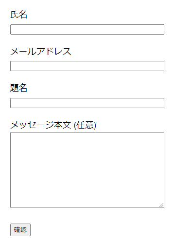
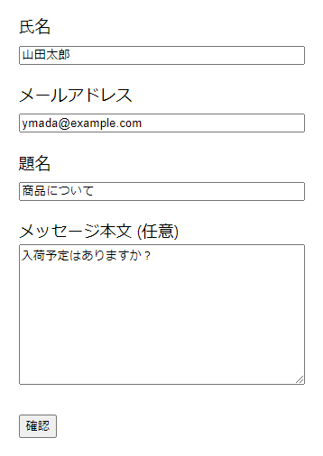
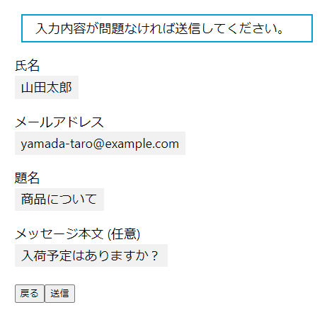
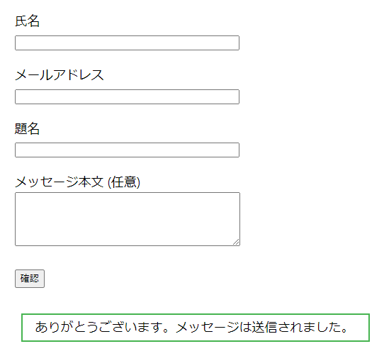

<!doctype html>
<html lang="ja">

<meta charset="utf-8">
<meta name="format-detection" content="telephone=no">
<meta name="viewport" content="width=device-width, viewport-fit=cover">
<meta name="description" content="">

<title>フロント / Confirm Mode for Contact Form 7</title>

<link rel="stylesheet" href="bootstrap-5.0.2-dist/css/bootstrap.min.css">
<link rel="stylesheet" href="css/common.css">

<main class="p-3 px-md-4 px-xl-5 py-xl-4">
    <h1>フロント</h1>
    <p class="mt-4">
        このプラグインの重要な機能の多くは、フロント側のJavaScriptが担っています。<br>
        （執筆中）
    </p>
    
    
    
    
</main>

<script src="bootstrap-5.0.2-dist/js/bootstrap.bundle.min.js"></script>
<script src="js/common.js"></script>

</html>